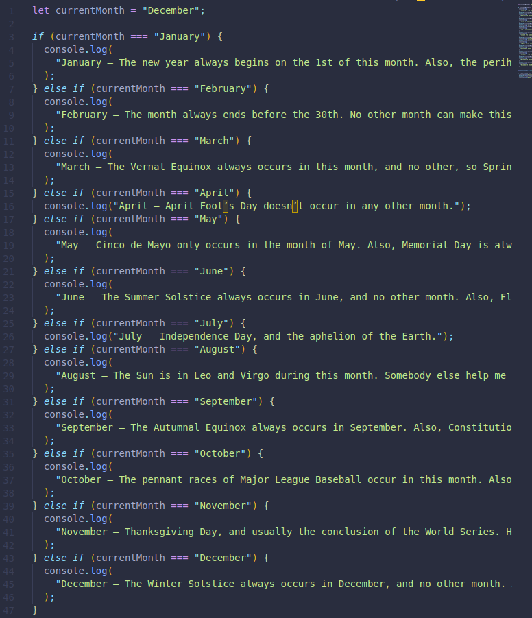
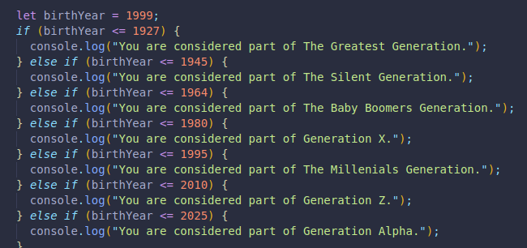

This conditional goes after declaring an if statement, as a second option if our if statement does not run. (Which depends on our code.)
We can make something simple:
We will declare a variable called favoriteDay and set it to Saturday.
let favoriteDay = "Saturday";
Now we will make a conditional where it will check if the favorite day is Friday, if it is not, there will be an if else statement to check if it is Friday. We will display a message only if it is one of those two options.
if(favoriteDay === "Friday"){
console.log("This is still a good option, but not my favorite.");
} if else (favoriteDay === "Saturday"){
console.log("Great minds think alike! This is my favorite day too!");
}
It checks for those 2 days only, otherwise it does not log anything to the console.
We also made another one listed below. It will display a message in the console depending on what month we have the currentMonth variable set to!
And one more which tells us what generation we are considered to be a part of depending on the year we enter for birthYear!
